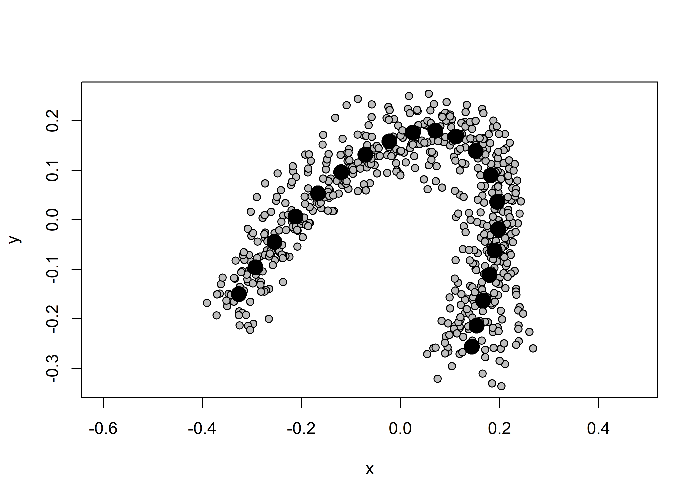
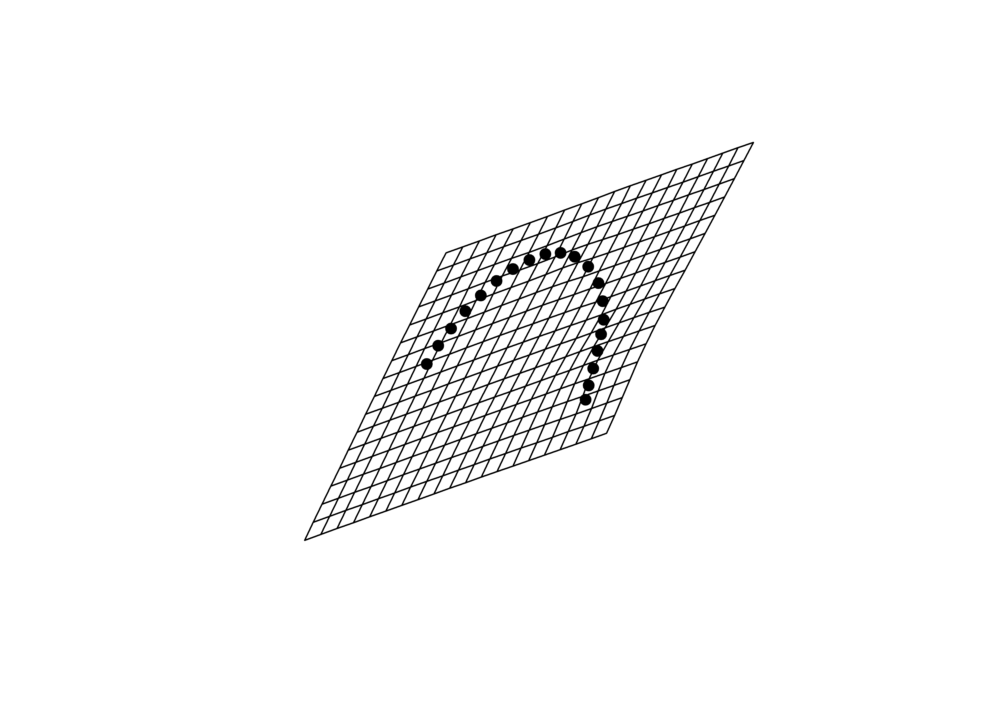

Chapter 2 Geometric morphometrics
2.1 Load packages + data
# download most recent software version
#devtools::install_github("geomorphR/geomorph", ref = "Stable", build_vignettes = TRUE)
#devtools::install_github("mlcollyer/RRPP")
# load analysis packages
library(here)
library(StereoMorph)
library(geomorph)## Loading required package: rgl## Loading required package: Matrix##
## Attaching package: 'Matrix'## The following objects are masked from 'package:tidyr':
##
## expand, pack, unpacklibrary(ggplot2)
library(dplyr)
library(wesanderson)
# read shape data and define number of sLMs
shapes <- readShapes("shapes")
shapesGM <- readland.shapes(shapes, nCurvePts = c(20))
# read qualitative data
qdata <- read.csv("qdata.csv",
header = TRUE,
row.names = 1)2.2 Generalised Procrustes Analysis
Landmark data were aligned to a global coordinate system (Kendall 1981, 1984; Slice 2001), achieved through generalized Procrustes superimposition (Rohlf and Slice 1990) performed in R 4.0.5 (R Core Development Team, 2017) using the geomorph library v. 4.0.0 (Adams et al. 2017; Adams and Otárola-Castillo 2013). Procrustes superimposition translates, scales, and rotates the coordinate data to allow for comparisons among objects (Gower 1975; Rohlf and Slice 1990). The geomorph package uses a partial Procrustes superimposition that projects the aligned specimens into tangent space subsequent to alignment in preparation for the use of multivariate methods that assume linear space (Rohlf 1999; Slice 2001).
# gpa
Y.gpa <- gpagen(shapesGM, print.progress = FALSE)
plot(Y.gpa)
2.3 Boxplot (centroid size)
# dataframe
gdf <- geomorph.data.frame(shape = Y.gpa$coords,
size = Y.gpa$Csize,
cont = qdata$ context)
# add centroid size to qdata
qdata$csz <- Y.gpa$Csize
# attributes
csz <- qdata$csz
context <- qdata$context
# palette
pal = wes_palette("Moonrise2")
# boxplot of Perdiz arrow points by context
csz.temp <- ggplot(qdata, aes(x = context, y = csz, color = context)) +
geom_boxplot() +
geom_dotplot(binaxis = 'y', stackdir = 'center', dotsize = 0.3) +
scale_color_manual(values = pal) +
theme(legend.position = "none") +
theme(axis.text.x = element_text(angle = 90, vjust = 0.5, hjust=1)) +
labs(x = 'Raw Material', y = 'Centroid Size')
# render plot
csz.temp## Bin width defaults to 1/30 of the range of the data. Pick better value with `binwidth`.
2.4 Principal Components Analysis
Principal components analysis (Jolliffe 2002) was used to visualise shape variation among the bifaces. The shape changes described by each principal axis are commonly visualized using thin-plate spline warping of a reference 3D mesh (Klingenberg 2013; Sherratt et al. 2014).
# pca
pca <- gm.prcomp(Y.gpa$coords)
summary(pca)##
## Ordination type: Principal Component Analysis
## Centering by OLS mean
## Orthogonal projection of OLS residuals
## Number of observations: 30
## Number of vectors 29
##
## Importance of Components:
## Comp1 Comp2 Comp3 Comp4 Comp5 Comp6 Comp7
## Eigenvalues 0.0371361 0.01634379 0.002105276 0.0006150787 0.0004071649 0.0002011171 0.0001378441
## Proportion of Variance 0.6491699 0.28570315 0.036801982 0.0107520889 0.0071175814 0.0035156955 0.0024096305
## Cumulative Proportion 0.6491699 0.93487306 0.971675045 0.9824271341 0.9895447155 0.9930604110 0.9954700415
## Comp8 Comp9 Comp10 Comp11 Comp12 Comp13 Comp14
## Eigenvalues 9.249565e-05 6.610968e-05 3.441467e-05 2.358206e-05 1.273002e-05 8.279266e-06 6.377831e-06
## Proportion of Variance 1.616901e-03 1.155652e-03 6.015971e-04 4.122341e-04 2.225314e-04 1.447285e-04 1.114898e-04
## Cumulative Proportion 9.970869e-01 9.982426e-01 9.988442e-01 9.992564e-01 9.994790e-01 9.996237e-01 9.997352e-01
## Comp15 Comp16 Comp17 Comp18 Comp19 Comp20 Comp21
## Eigenvalues 3.601826e-06 3.218518e-06 2.218869e-06 1.751957e-06 1.361077e-06 8.823034e-07 7.436413e-07
## Proportion of Variance 6.296292e-05 5.626238e-05 3.878768e-05 3.062567e-05 2.379275e-05 1.542340e-05 1.299947e-05
## Cumulative Proportion 9.997981e-01 9.998544e-01 9.998932e-01 9.999238e-01 9.999476e-01 9.999630e-01 9.999760e-01
## Comp22 Comp23 Comp24 Comp25 Comp26 Comp27 Comp28
## Eigenvalues 6.629143e-07 2.383783e-07 1.985124e-07 1.381615e-07 5.898989e-08 4.174008e-08 2.855408e-08
## Proportion of Variance 1.158830e-05 4.167051e-06 3.470163e-06 2.415178e-06 1.031193e-06 7.296515e-07 4.991491e-07
## Cumulative Proportion 9.999876e-01 9.999918e-01 9.999953e-01 9.999977e-01 9.999987e-01 9.999994e-01 9.999999e-01
## Comp29
## Eigenvalues 3.955376e-09
## Proportion of Variance 6.914327e-08
## Cumulative Proportion 1.000000e+00# set plot parameters
pch.gps <- c(15,17)[as.factor(qdata$context)]
col.gps <- pal[as.factor(qdata$context)]
col.hull <- c("#798E87","#C27D38")
# pca plot
pc.plot <- plot(pca,
asp = 1,
pch = pch.gps,
col = col.gps)
shapeHulls(pc.plot,
groups = qdata$context,
group.cols = col.hull)2.4.1 Minima/maxima of PC1/2
# plot x/y maxima/minima
# x - minima
mean.shape <- mshape(Y.gpa$coords)
plotRefToTarget(pca$shapes$shapes.comp1$min,
mean.shape)
# x - maxima
plotRefToTarget(pca$shapes$shapes.comp1$max,
mean.shape)# y - minima
plotRefToTarget(pca$shapes$shapes.comp2$min,
mean.shape)
# y - maxima
plotRefToTarget(pca$shapes$shapes.comp2$max,
mean.shape)
2.5 Procrustes ANOVA: Shape and size
# does shape differ by context?
fit.sh.reg <- procD.lm(shape ~ context,
data = gdf,
print.progress = FALSE,
iter = 9999)
# shape
anova(fit.sh.reg)##
## Analysis of Variance, using Residual Randomization
## Permutation procedure: Randomization of null model residuals
## Number of permutations: 10000
## Estimation method: Ordinary Least Squares
## Sums of Squares and Cross-products: Type I
## Effect sizes (Z) based on F distributions
##
## Df SS MS Rsq F Z Pr(>F)
## context 1 0.17877 0.178767 0.10776 3.3816 1.7342 0.0365 *
## Residuals 28 1.48019 0.052864 0.89224
## Total 29 1.65896
## ---
## Signif. codes: 0 '***' 0.001 '**' 0.01 '*' 0.05 '.' 0.1 ' ' 1
##
## Call: procD.lm(f1 = shape ~ context, iter = 9999, data = gdf, print.progress = FALSE)# does size differ by context?
fit.sz.reg <- procD.lm(size ~ context,
data = gdf,
print.progress = FALSE,
iter = 9999)
# size
anova(fit.sz.reg)##
## Analysis of Variance, using Residual Randomization
## Permutation procedure: Randomization of null model residuals
## Number of permutations: 10000
## Estimation method: Ordinary Least Squares
## Sums of Squares and Cross-products: Type I
## Effect sizes (Z) based on F distributions
##
## Df SS MS Rsq F Z Pr(>F)
## context 1 0.0275 0.027532 0.00507 0.1426 -0.56399 0.7099
## Residuals 28 5.4054 0.193049 0.99493
## Total 29 5.4329
##
## Call: procD.lm(f1 = size ~ context, iter = 9999, data = gdf, print.progress = FALSE)2.6 Allometry
# allometry (does shape change with size)
fit.size <- procD.lm(shape ~ size,
data = gdf,
print.progress = FALSE,
iter = 9999)
# allometry
anova(fit.size)##
## Analysis of Variance, using Residual Randomization
## Permutation procedure: Randomization of null model residuals
## Number of permutations: 10000
## Estimation method: Ordinary Least Squares
## Sums of Squares and Cross-products: Type I
## Effect sizes (Z) based on F distributions
##
## Df SS MS Rsq F Z Pr(>F)
## size 1 0.16431 0.16431 0.09905 3.0782 1.5966 0.0514 .
## Residuals 28 1.49465 0.05338 0.90095
## Total 29 1.65896
## ---
## Signif. codes: 0 '***' 0.001 '**' 0.01 '*' 0.05 '.' 0.1 ' ' 1
##
## Call: procD.lm(f1 = shape ~ size, iter = 9999, data = gdf, print.progress = FALSE)2.7 Mean shapes
# subset landmark coordinates to produce mean shapes
new.coords <- coords.subset(A = Y.gpa$coords,
group = qdata$context)
names(new.coords)## [1] "Pit 434" "Structure 23"# group shape means
mean <- lapply(new.coords, mshape)
# plot mean shapes
plot(mean$`Pit 434`)
plot(mean$`Structure 23`)# comparison plots
plotRefToTarget(mean$`Pit 434`,
mean$`Structure 23`,
method = "points",
mag = 1)